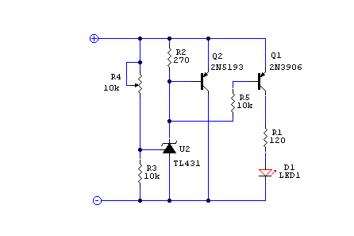
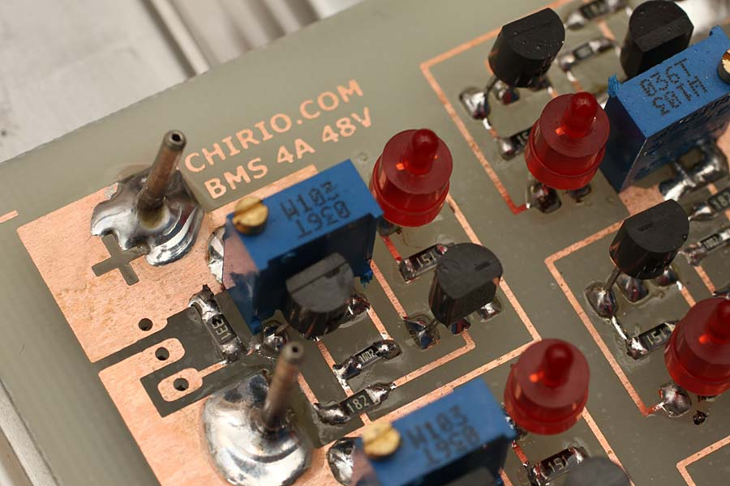
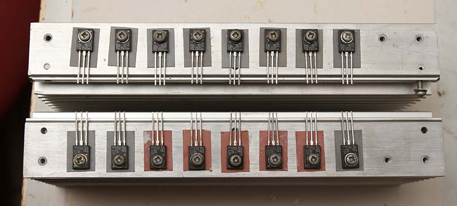
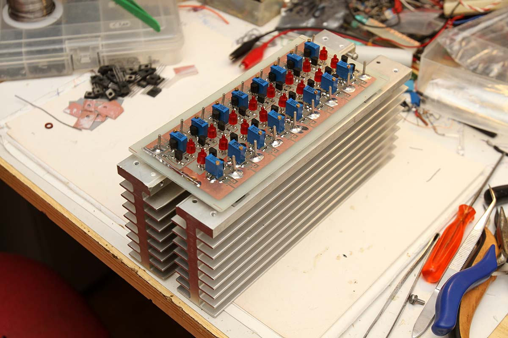
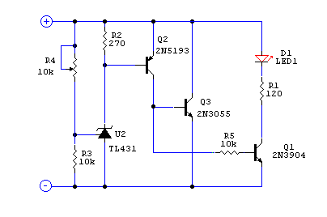
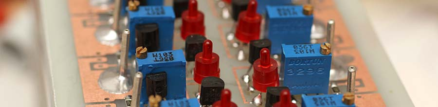

Batteries & energy
BMS - Battery Management System
Lithium-Lipo-LiFePo4 battery balancer "Electronics design" by R.Chirio
Page index
BMS 48V 4A
March 2014 - November 2021
To quickly charge lithium polymer batteries, an end-of-charge balancer is necessary, capable of absorbing all the current delivered by the charger.
See the meaning of BMS: http://en.wikipedia.org/wiki/Battery_management_system
In this case it is not the circuit of a full-featured BMS, but only an end-of-charge balancer, to be kept together with the charger as it is bulky.
The assembled battery pack is composed of 16 A123 cells rated at 20A, the end-of-charge voltage for each cell must be 3.60V with very little tolerance, if the voltage increases there is risk of seriously damaging the battery.
Each BMS section is equipped with a multi-turn precision trimmer to precisely set the intervention value. To display the current-limit intervention, there is one LED for each battery, a total of 16 LEDs, which light up to indicate the voltage value reached.
Threshold values not to be exceeded during charging:
- A123 cells and LIFEPO4 = 3.60V
- Lipo/Lithium batteries = 4.20V
Circuit diagram version 4A

Single cell schematic, you must replicate 16 identical circuits to have a 48V battery pack regulator, if the pack is 36V, 12 circuits in series are sufficient.
The threshold control is entrusted to the precise TL431; calibration of the limit voltage is done through the 10k trimmer R4. The threshold voltage must be precisely calibrated, using a digital voltmeter and a current-controlled power supply. (To be done with circuits hot at steady state)
The PNP transistor 2N5193 has the task of drawing current when the voltage exceeds the calibration value, from the datasheet parameters we're at the limit of the HFE gain equal to 40, better to perform a selection of transistors and use only those with gain > 40
Transistor Q1 is a generic low-current PNP, its task is to drive the led with a current of 10mA, it is not critical, any low-power PNP will do.
The D1 LED must be a red LED, as other colors require a higher threshold voltage and may not light up completely. Blue and white LEDs are therefore not suitable, while yellow and green LEDs could still work.

BMS group, let's look at the elements of the single cell, on the solder terminal we'll connect the cable going to the battery, very important to respect the connection sequence, no errors allowed!

BMS Group, the 16 power transistors mounted on the heatsink, each one must be isolated from the heatsink. Take care with the assembly as each transistor must dissipate 3.6V x 4A = 14.4W and 4.20V x 4A in the worst conditions.

Assembled BMS group; the printed circuit board dimensions are 160 x 70 while the heatsinks are 200mm long. During end-of-charge operation with a 3-4A battery charger, the heating is considerable; over 200W therefore requires an 80x80 12V fan to be powered separately.
To avoid voltage drops, the battery connection must be as short as possible use copper cables of at least 1mmq better 1.5mmq to avoid voltage drops.
Circuit diagram version 10A

This simple variant allows leveling up to 10A, the circuit has been tested under load and the threshold is precise, the connections must be well sized.
Single cell schematic, you must replicate 16 identical circuits to have a 48V battery pack regulator, if the pack is 36V, 12 circuits in series are sufficient.
The threshold control is entrusted to the precise TL431; calibration of the limit voltage is done through the 10k trimmer R4. The threshold voltage must be precisely calibrated, using a digital voltmeter and a current-controlled power supply. (To be done with circuits hot at steady state)
The PNP transistor 2N5193 has the task of driving transistor Q3 in a Darlington configuration; the current gain is sufficient to drive the 2N3055 under worst conditions; with gain 40 × 5 we get a theoretical 20A not sustained by Q3, but 10A holds up well; good heat dissipation with a generously sized heatsink is needed. Easier to mount is the plastic version with marking TIP3055.
Transistor Q1 is a generic low-current NPN, its task is to drive the led with a current of 10mA, it is not critical, any small power NPN will do.
The D1 LED must be a red LED, as other colors require a higher threshold voltage and may not light up completely. Blue and white LEDs are therefore not suitable, while yellow and green LEDs could still work.

This is the original project, it has been copied and presented as the idea of other designers on the web, obviously erasing the photos where you can read on the PCB www.chirio.com", it has been reported to the web authorities, report any other abuses.
© Roberto Chirio: all rights reserved.